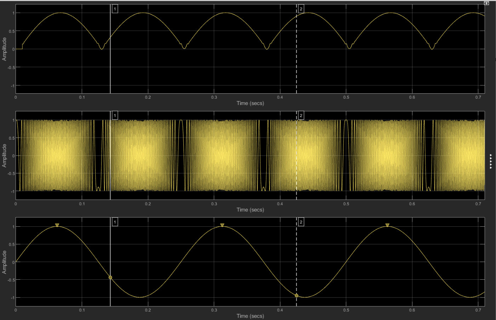
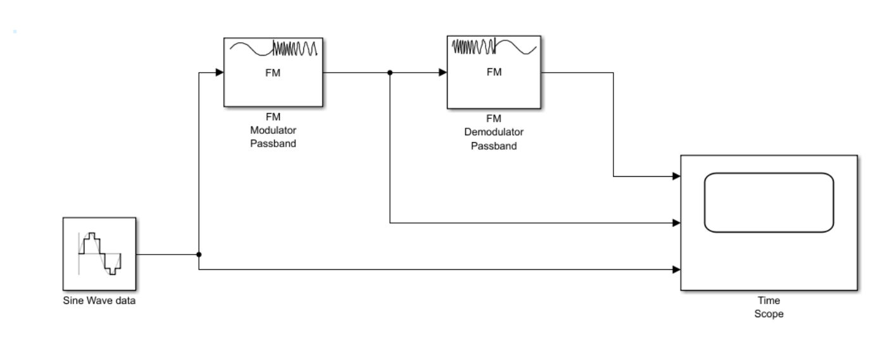
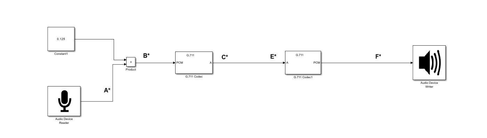
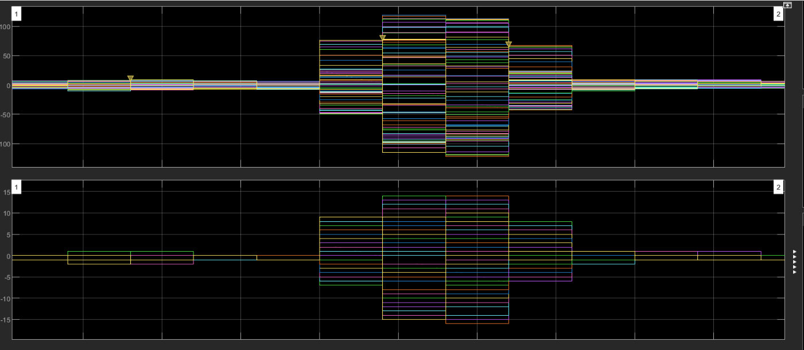
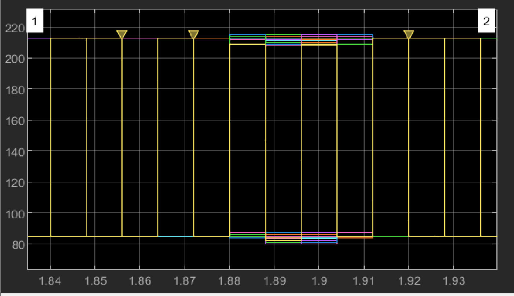
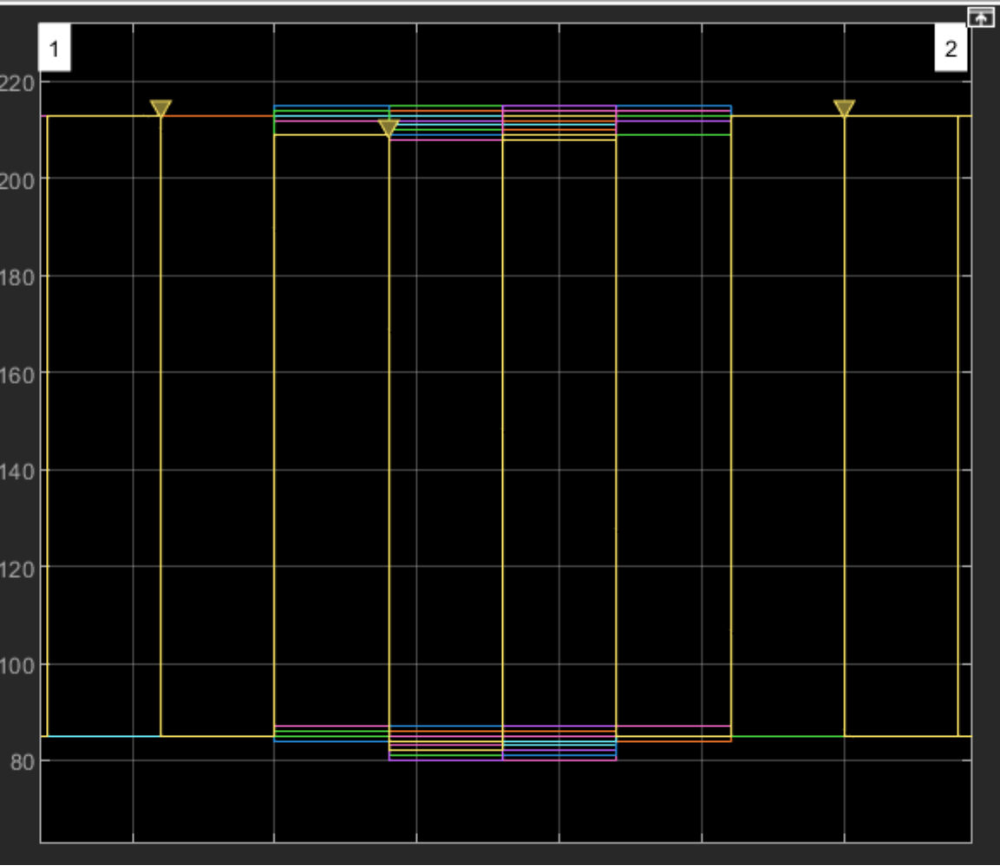

Mesurer et caractériser un signal ou un système
Modéliser une chaîne de transmission de la voix et mesurer, étape par étape, ce que deviennent le signal et sa qualité.
Équipe : Binôme : ABDOU Imane et DHOIFFIR Owais · Groupe T

Contexte et objectif
Contexte
En téléphonie, la voix est filtrée, numérisée, compressée puis transmise : chaque étape modifie le signal. Ce projet consiste à observer et quantifier ces transformations.
Objectif
Simuler une modulation FM puis un système émetteur-récepteur vocal avec codec G.711 (loi A), et caractériser les signaux à chaque étape par des mesures.
Ma mission
Mon rôle
En binôme, nous avons construit les modèles et réalisé toutes les mesures :
- Configuration des blocs Simulink : générateur sinusoïdal, modulateur et démodulateur FM passe-bande
- Construction de la chaîne vocale : acquisition audio, gain, codage et décodage G.711, restitution sur haut-parleur
- Mesures à l'oscilloscope virtuel (fréquence, amplitude, RMS, slew rate, temps de montée) aux points A à F
- Interprétation des résultats et rédaction du rapport
Travaux réalisés
Modulation de fréquence
Une sinusoïde basse fréquence module une porteuse de 1 000 Hz avec une déviation de 500 Hz ; démodulation par discriminateur avec filtre de Hilbert d'ordre 100, en respectant la règle de Nyquist.
Acquisition de la voix
Bloc Audio Device Reader en mono à 8 000 Hz, 64 échantillons par trame, puis gain appliqué par multiplication élément par élément (constante 0,125).
Numérisation G.711
Encodage PCM int16 vers loi A (uint8) puis décodage, comme en téléphonie numérique ; restitution par Audio Device Writer.
Analyse temporelle
Mesures comparées des signaux A (brut), B (filtré), C et E (codés) et F (décodé).
Outils et technologies
Illustrations du projet
Images extraites du rapport. Cliquez pour agrandir.





Difficultés et solutions
Résultats obtenus
- Démodulation FM fidèle : fréquence restituée proche de l'originale (≈ 3,55 Hz) avec une faible distorsion
- Mise en évidence de la quantification en paliers introduite par le codec G.711
- Signal décodé (F) retrouvant sa forme générale avec une légère perte d'amplitude liée à la compression
Compétences développées
Compétences
- Modulation et démodulation analogique
- Numérisation et codage de la voix
- Mesure et caractérisation de signaux
- Modélisation sous Simulink
- Analyse et interprétation de résultats
Ce que ce projet m'a apporté
Ce projet m'a fait comprendre concrètement ce qui se passe « dans le câble » lors d'un appel téléphonique, et l'importance de mesurer pour valider une chaîne de transmission.
Envie d'aller plus loin ?
Le document complet détaille toutes les configurations, mesures et analyses.